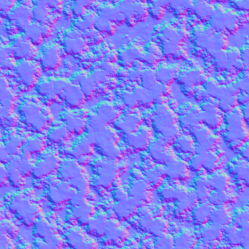
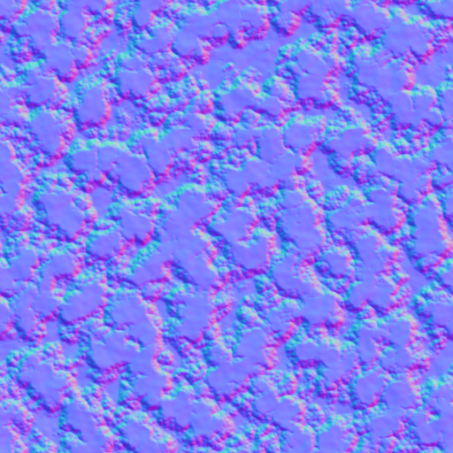
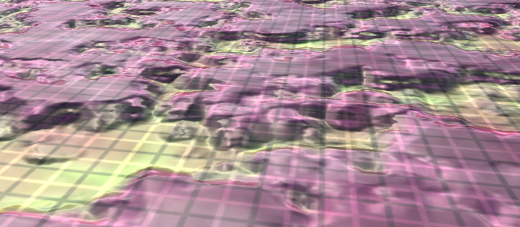

Rendering 20
Parallax
- Shift texture coordinates based on view direction.
- Use a height field to create the illusion of depth.
- Trace a ray through a height field.
- Approximate or search for an intersection point.
This is part 20 of a tutorial series about rendering. The previous part covered GPU instancing. In this installment we'll add the final part of the standard shader that we so far didn't support, which is parallax mapping.
This tutorial was made with Unity 2017.1.0f3.
Parallax Mapping
Due to perspective, the observed relative position of things that we see changes when we adjust our point of view. This visual phenomenon is known as parallax. It is most obvious when looking sideways when traveling at a high speed. Nearby things appear large and move by quickly, while the distant background appears small and moves slower.
We already account for perspective when rendering, at least when using a camera in perspective mode. Thus, geometry exhibits parallax.
We also use normal maps to add the illusion of surface irregularities to smooth triangles. This affects the lighting, but not the actual shape of the surface. Thus, this effect does not exhibit parallax. This limits the illusion of depth that we can add via normal maps.
Test Scene
Below is an albedo map and normal map that suggest many elevation differences.
 

Import these textures, then create a material that uses them and My First Lighting Shader. Create a new scene with a single quad, rotated (90, 0, 0) so it lies flat, and give it the material.
Without the normal map, the quad is obviously flat. Adding a normal map makes it look as if it has an irregular surface. However, the elevation differences appear small. This becomes evident when observing the quad from a shallow view angle. Were the elevation differences large, the relative visual position of surface features should change a lot due to parallax, but they don't. The parallax that we see is that of a flat surface.
We could increase the strength of the normal map, but this doesn't change the parallax. Also, when the normal map becomes too strong it will just look weird. The lighting suggests steep slopes, while the parallax tells us it's flat. So normal maps only work for small variations that wouldn't exhibit obvious parallax.
To get a true sense of depth, we first need to determine how much depth there should be. Normal maps don't contain this information. So we need a height map. With that, we might be able to create fake parallax, like we create fake slopes. Below is such a map for our material. It is grayscale, with black representing the lowest points and white representing the highest points. Because we'll use this map to create a parallax effect, it's often known as a parallax map instead of a height map.
Make sure to disable sRGB (Color Texture) when importing it, so the data doesn't get messed up when using linear rendering.
Parallax Shader Parameters
To be able to use the parallax map, we have to add a property for it to My First Lighting Shader. Just like for occlusion, we'll also give it a strength parameter to scale the effect. Because parallax effects are rather strong, we'll set its range to 0–0.1.
[NoScaleOffset] _ParallaxMap ("Parallax", 2D) = "black" {}
_ParallaxStrength ("Parallax Strength", Range(0, 0.1)) = 0
[NoScaleOffset] _OcclusionMap ("Occlusion", 2D) = "white" {}
_OcclusionStrength ("Occlusion Strength", Range(0, 1)) = 1
Parallax mapping is a shader feature that we'll enable with the _PARALLAX_MAP keyword. Add the required compiler directive to the base pass, the additive pass, and the deferred pass.
#pragma shader_feature _NORMAL_MAP #pragma shader_feature _PARALLAX_MAP
To access the new properties, add the corresponding variables to My Lighting.
sampler2D _ParallaxMap; float _ParallaxStrength; sampler2D _OcclusionMap; float _OcclusionStrength;
And to make it possible to configure the material, add a DoParallax method to MyLightingShaderGUI. You can duplicate its DoOcclusion method and change the property names, label, and keyword. Like the occlusion map, Unity's standard shader expects the height data to be stored in the texture's G channel. So we'll do this as well and indicate this in the tooltip.
void DoParallax () {
MaterialProperty map = FindProperty("_ParallaxMap");
Texture tex = map.textureValue;
EditorGUI.BeginChangeCheck();
editor.TexturePropertySingleLine(
MakeLabel(map, "Parallax (G)"), map,
tex ? FindProperty("_ParallaxStrength") : null
);
if (EditorGUI.EndChangeCheck() && tex != map.textureValue) {
SetKeyword("_PARALLAX_MAP", map.textureValue);
}
}
Invoke the new method in DoMain, between DoNormals and DoOcclusion.
void DoMain () {
…
DoNormals();
DoParallax();
DoOcclusion();
…
}
It is now possible to assign a parallax map to our material. After doing so, set its strength to a low value, like 0.03.
Adjusting Texture Coordinates
To apply a parallax effect, we have to make parts of the surface appear to be somewhere else. This is done by adjust the texture coordinates in the fragment program. Create an ApplyParallax function for that somewhere above MyFragmentProgram in My Lighting. This function is going to adjust the interpolated data when needed, so give it an inout Interpolators parameter.
void ApplyParallax (inout Interpolators i) {
}
ApplyParallax should be invoked in our fragment program before the interpolated data is used. The exception is LOD fading, because that depends on the screen position. We're not going to adjust those coordinates.
FragmentOutput MyFragmentProgram (Interpolators i) {
UNITY_SETUP_INSTANCE_ID(i);
#if defined(LOD_FADE_CROSSFADE)
UnityApplyDitherCrossFade(i.vpos);
#endif
ApplyParallax(i);
float alpha = GetAlpha(i);
#if defined(_RENDERING_CUTOUT)
clip(alpha - _Cutoff);
#endif
…
}
Let's begin by adjusting the texture coordinates by simply adding the parallax strength to the U coordinate. Only do this when the parallax feature is enabled.
void ApplyParallax (inout Interpolators i) {
#if defined(_PARALLAX_MAP)
i.uv.x += _ParallaxStrength;
#endif
}
Changing the parallax strength now causes the texture to scroll. Increasing the U coordinates moves the texture in the negative U direction. This doesn't look like a parallax effect yet, because it's a uniform displacement, and it's independent of the point of view.
Shifting Along View Direction
Parallax is caused by perspective projection, which is relative to the observer. So we have to shift the texture coordinates with that in mind. What this means is that we have to shift the coordinates based on the view direction, which is different for each fragment.
Texture coordinates exist in tangent space. To adjust these coordinates, we need to know the view direction in tangent space as well. This will require a space conversion, which means a matrix multiplication. We already have a tangent-space matrix available in the fragment shader, but that one is for converting from tangent to world space. In this case, we need to transform in the other direction. We could pass another matrix to the fragment program and use it there, but that's getting costly.
The view direction is defined as the vector from the surface to the camera, normalized. We can determine this vector in the vertex program, convert it there, and pass it to the fragment program. It we postpone normalization until after interpolation, we end up with the correct direction. Then we only have to add the tangent-space view direction as a new interpolator.
struct InterpolatorsVertex {
…
#if defined(_PARALLAX_MAP)
float3 tangentViewDir : TEXCOORD8;
#endif
};
struct Interpolators {
…
#if defined(_PARALLAX_MAP)
float3 tangentViewDir : TEXCOORD8;
#endif
};
We can create an object-to-tangent space transformation matrix in the vertex program, using the raw vertex tangent and normal vectors from the mesh data. As we only use it for transforming a vector – not a position – we can suffice with a 3×3 matrix.
InterpolatorsVertex MyVertexProgram (VertexData v) {
…
ComputeVertexLightColor(i);
#if defined (_PARALLAX_MAP)
float3x3 objectToTangent = float3x3(
v.tangent.xyz,
cross(v.normal, v.tangent.xyz) * v.tangent.w,
v.normal
);
#endif
return i;
}
Next, we need the view direction to the vertex position in object space, for which we can use the ObjSpaceViewDir function. Transform that using our matrix, and we have what we need.
#if defined (_PARALLAX_MAP) float3x3 objectToTangent = float3x3( v.tangent.xyz, cross(v.normal, v.tangent.xyz) * v.tangent.w, v.normal ); i.tangentViewDir = mul(objectToTangent, ObjSpaceViewDir(v.vertex)); #endif
Now we have access to the tangent-space view direction in ApplyParallax. First, normalize it to turn it into a proper direction vector. Then, add its XY components to the texture coordinates, modulated by the parallax strength.
void ApplyParallax (inout Interpolators i) {
#if defined(_PARALLAX_MAP)
i.tangentViewDir = normalize(i.tangentViewDir);
i.uv.xy += i.tangentViewDir.xy * _ParallaxStrength;
#endif
}
What this effectively does is project the view direction onto the texture surface. When looking straight at the surface, at a 90° angle, the view direction in tangent space is equal to the surface normal (0, 0, 1), which results in no displacement. The shallower the view angle gets, the larger the projection becomes, and the greater the displacement effect.
The effect of all of this is that the surface appears to get pulled upwards in tangent space, appearing higher than it actually is, based on the parallax strength.
Sliding Based on Height
At this point we can make the surface appear higher, but it's still a uniform displacement. The next step is to use the parallax map to scale the displacement. Sample the map, use its G channel as the height, apply the parallax strength, and use that to modulate the displacement.
i.tangentViewDir = normalize(i.tangentViewDir); float height = tex2D(_ParallaxMap, i.uv.xy).g; height *= _ParallaxStrength; i.uv.xy += i.tangentViewDir.xy * height;
Lows area now remain in place, while high areas get pulled upwards. The standard shader offsets this effect, so low areas move downward as well, while areas in the middle remain where they are. This is done by subtracting ½ from the raw height data.
float height = tex2D(_ParallaxMap, i.uv.xy).g; height -= 0.5; height *= _ParallaxStrength;
This produces the parallax effect that we're looking for, but it only works at low strength. The displacement quickly becomes too great, ripping the surface apart.
Correctly Projected Offsets
The parallax mapping technique that we're currently using is known as parallax mapping with offset limiting. We're simply using the XY part of the view direction, which has a maximum length of 1. Hence, the texture offset is limited. The effect can give decent results, but doesn't represent a correct perspective projection.
A more physically accurate way to calculate offsets would be to treat the height field as a volume below the geometry surface, and shoot a view ray though it. The ray is shot from the camera to the surface, enters the height field volume from above, and continues until it hits the surface defined by the field.
If the height field were uniformly zero, then the ray would simply continue until it reaches the bottom of the volume. How far away that is depends on the angle at which the ray entered the volume. It is not limited. The shallower the angle, the further it goes. The most extreme case is when the view angle approaches zero, which makes the ray shoot towards infinity.
To find the appropriate offset, we have to scale the view direction vector so it's Z component becomes 1, which we do by dividing it by its own Z component. As we don't need to use Z later, we only have to divide X and Y by Z.
i.tangentViewDir = normalize(i.tangentViewDir); i.tangentViewDir.xy /= i.tangentViewDir.z;
While this results in a more correct projection, it does worsen the artifacts of our parallax effect for shallow view angles. The standard shader alleviates this by adding a bias to the Z component, which is 0.42, so it never gets close to zero. This warps the perspective, but keeps the artifacts more manageable. Let's add this bias as well.
i.tangentViewDir.xy /= (i.tangentViewDir.z + 0.42);
Our shader now support the same parallax effect as the standard shader. While parallax mapping can be applied to any surface, the projection assumes that the tangent space is uniform. Curved surfaces have curved tangent spaces, so will produce physically incorrect results. As long as the parallax strength and curvature are small, you can get away with it.
Also, shadow coordinates are not influenced by this effect. As a result, shadows can look weird in combination with strong parallax, appearing to float above the surface.
Parallax Configuration
Do you agree with Unity's bias of 0.42? Would you like to use a different value, or leave it at zero? Or would you like to use offset limiting instead? Let's make it configurable!
When you want to use offset limiting, define PARALLAX_OFFSET_LIMITING in your shader. Otherwise, set which bias you want to use by defining PARALLAX_BIAS. Adjust ApplyParallax to make this possible.
void ApplyParallax (inout Interpolators i) {
#if defined(_PARALLAX_MAP)
i.tangentViewDir = normalize(i.tangentViewDir);
#if !defined(PARALLAX_OFFSET_LIMITING)
i.tangentViewDir.xy /= (i.tangentViewDir.z + PARALLAX_BIAS);
#endif
…
#endif
}
Let's stick to the default bias of 0.42 when nothing is defined. We can do that by simply defining it in ApplyParallax when someone else hasn't. Note that macro definitions don't care about function scope, they're always global.
#if !defined(PARALLAX_OFFSET_LIMITING) #if !defined(PARALLAX_BIAS) #define PARALLAX_BIAS 0.42 #endif i.tangentViewDir.xy /= (i.tangentViewDir.z + PARALLAX_BIAS); #endif
Now we can fine-tune our parallax effect via the CGINCLUDE block in My First Lighting Shader. I added the options for no bias and offset-limiting, but turned them into comments to stick with the default options.
CGINCLUDE #define BINORMAL_PER_FRAGMENT #define FOG_DISTANCE // #define PARALLAX_BIAS 0 // #define PARALLAX_OFFSET_LIMITING ENDCG
Detail UV
Parallax mapping works with the main maps, but we haven't taken care of the secondary maps yet. We have to apply the texture coordinate offset to the detail UV as well.
First, below is a detail map containing a grid pattern. It makes it easy to verify whether the effect gets applied to the details correctly.
Use this texture as the detail albedo map for our material. Set the tiling of the secondary maps to 10×10. This reveals that the detail UV are indeed still unaffected.

The standard shader simply also adds the UV offset to the detail UV, which are stored in the ZW components of the UV interpolator. Let's do the same.
float height = tex2D(_ParallaxMap, i.uv.xy).g; height -= 0.5; height *= _ParallaxStrength; float2 uvOffset = i.tangentViewDir.xy * height; i.uv.xy += uvOffset; i.uv.zw += uvOffset;
The details might have changed a little, but they definitely do not match the parallax effect yet. That's because we tile our secondary maps. This scales the detail UV by 10, making the parallax offset ten times too weak. We have to apply the detail tiling to the offset as well. The standard shader does not take this into account.
i.uv.zw += uvOffset * _DetailTex_ST.xy;
Actually, the scaling should be relative to the main UV tiling, in case it's set to something else than 1×1. This ensures that it always works.
i.uv.zw += uvOffset * (_DetailTex_ST.xy / _MainTex_ST.xy);
Raymarching
The idea is that our parallax effect works by shooting a view ray thought the height volume and determining where it hits the surface. It does this by sampling the height map only once, at the point where the ray enters the volume. But when we're looking at an angle, this doesn't tell us anything about the height where the ray actually intersects the height field.
Our current approach assumes that the height at the entry point is the same as the height at the intersection point. This is only correct if the entry and intersection points actually have the same height. It still works fairly well when the offset isn't large and the height field doesn't vary too much. However, when the offset becomes too large or the heights vary too quickly, we end up with a wild guess, which is likely wrong. This is what causes the artifacts that rip the surface apart.
If we can figure out where the ray actually hits the height field, then we can we can always find the true visible surface point. This cannot be done with a single texture sample. We'll have to move along the view ray in small steps, sampling the height field each time, until we reach the surface. This technique is known as raymarching.
There are various variants of parallax mapping that use raymarching. The most well-known are Steep Parallax Mapping, Relief Mapping, and Parallax Occlusion Mapping. Their names don't tell you what they do exactly, but what they're trying to achieve. Basically, it's tree ways to say the same thing. They raymarch through a height field to create a better parallax effect, compared to using a single texture sample. Besides that, they can apply additional shading and techniques to improve the algorithm. I'll call it out when what we're doing matches one of these approaches.
Parallax Functions
The standard shader only supports simple offset parallax mapping. We're now going to add support for parallax raymarching to our own shader. But let's also keep supporting the simple approach. Both will need to sample the height field, so put the sampling code line in a separate GetParallaxHeight function. Also, the projected view direction and the final application of the offset will be the same for both approaches. So put the offset calculation in its own function as well. It only requires the original UV coordinates and processed view direction as parameters. Its result is the UV offset to apply.
float GetParallaxHeight (float2 uv) {
return tex2D(_ParallaxMap, uv).g;
}
float2 ParallaxOffset (float2 uv, float2 viewDir) {
float height = GetParallaxHeight(uv);
height -= 0.5;
height *= _ParallaxStrength;
return viewDir * height;
}
void ApplyParallax (inout Interpolators i) {
#if defined(_PARALLAX_MAP)
i.tangentViewDir = normalize(i.tangentViewDir);
#if !defined(PARALLAX_OFFSET_LIMITING)
#if !defined(PARALLAX_BIAS)
#define PARALLAX_BIAS 0.42
#endif
i.tangentViewDir.xy /= (i.tangentViewDir.z + PARALLAX_BIAS);
#endif
float2 uvOffset = ParallaxOffset(i.uv.xy, i.tangentViewDir.xy);
i.uv.xy += uvOffset;
i.uv.zw += uvOffset * (_DetailTex_ST.xy / _MainTex_ST.xy);
#endif
}
Now we'll make our parallax approach flexible by replacing the hard-coded invocation of ParallaxOffset with the PARALLAX_FUNCTION macro. If it hasn't been defined, we'll set it to use the offset approach.
void ApplyParallax (inout Interpolators i) {
#if defined(_PARALLAX_MAP)
…
#if !defined(PARALLAX_FUNCTION)
#define PARALLAX_FUNCTION ParallaxOffset
#endif
float2 uvOffset = PARALLAX_FUNCTION(i.uv.xy, i.tangentViewDir.xy);
i.uv.xy += uvOffset;
i.uv.zw += uvOffset * (_DetailTex_ST.xy / _MainTex_ST.xy);
#endif
}
Create a new function for our raymarching approach. It has to match the behavior of ParallaxOffset, so give it the same parameters and return type. Initially it does nothing, returning a zero offset.
float2 ParallaxOffset (float2 uv, float2 viewDir) {
…
}
float2 ParallaxRaymarching (float2 uv, float2 viewDir) {
float2 uvOffset = 0;
return uvOffset;
}
It is now possible to change the parallax approach in My First Lighting Shader by defining PARALLAX_FUNCTION. Set it to ParallaxRaymarching.
#define PARALLAX_BIAS 0 // #define PARALLAX_OFFSET_LIMITING #define PARALLAX_FUNCTION ParallaxRaymarching
Stepping Through the Height Field
To find the point where the view ray hits the height field, we have to sample multiple points on the ray and figure out where we end up below the surface. The first sample point is at the top, where we enter the height volume, like with the offset approach. The last sample point would be where the ray hits the bottom of the volume. We'll add additional sample points evenly spaced in between those end points.
Let's go with ten samples per ray. This means that we're going to sample the height map ten times instead of just once, so this isn't a cheap effect.
Because we use ten samples, our step size is 0.1. This is the factor by which we move along the view ray, which becomes our UV delta.
float2 ParallaxRaymarching (float2 uv, float2 viewDir) {
float2 uvOffset = 0;
float stepSize = 0.1;
float2 uvDelta = viewDir * stepSize;
return uvOffset;
}
To apply the parallax strength, we could adjust the height we sample each step. But scaling the UV delta has the same effect, which we only need to do once.
float2 uvDelta = viewDir * (stepSize * _ParallaxStrength);
By doing it this way, we can keep using 0–1 as the range of the height field, regardless of the parallax strength. Thus, the height of the first step on the ray is always 1. The height of the surface point below or above it is defined by the height field.
float stepSize = 0.1; float2 uvDelta = viewDir * (stepSize * _ParallaxStrength); float stepHeight = 1; float surfaceHeight = GetParallaxHeight(uv);
Now we have to iterate along the ray. Each step we'll increase the UV offset by the UV delta. The view vector points towards the camera, but we're moving towards the surface, so we actually have to subtract the UV delta instead. Then we decrease the step height by the step size. Then we sample the height map again. We keep doing this as long as we stay above the surface, which is at most nine more times after the first sample. We can use a while loop to program this.
float stepHeight = 1;
float surfaceHeight = GetParallaxHeight(uv);
while (stepHeight > surfaceHeight) {
uvOffset -= uvDelta;
stepHeight -= stepSize;
surfaceHeight = GetParallaxHeight(uv + uvOffset);
}
When attempting to compile this, we get a shader compiler warning and error. The warning tells us that there are gradient instructions used in a loop. This refers to the texture sampling inside our loop. The GPU has to figure out which mipmap level to use, for which it needs to compare the used UV coordinates of adjacent fragments. It can only do this when all fragments execute the same code. This is impossible for our loop, because it can terminate early, which can differ per fragment. So the compiler will unroll the loop, which means that it will perform all nine steps all the time, regardless whether our logic would suggest that we can stop earlier. Instead, it uses deterministic logic to select the final result afterwards.
The compilation fails because the compiler cannot determine the maximum number of iterations of our loop. It doesn't know that this is at most nine. So let's make this explicit, by turning our while loop into a for loop that enforces a limit.
for (int i = 1; i < 10 && stepHeight > surfaceHeight; i++) {
uvOffset -= uvDelta;
stepHeight -= stepSize;
surfaceHeight = GetParallaxHeight(uv + uvOffset);
}
The difference with the simple offset approach is obvious. The parallax effect is much more pronounced. Higher areas now also correctly block our view of lower areas behind them. And we also get obvious layers, ten in total.
Using More Steps
This basic raymarching approach best matches Steep Parallax Mapping. The quality of the effect is determined by our sample resolution. Some approaches use a variable amount of steps, based on the view angle. More shallow angles require more steps, because the ray is longer. But we're limited to a fixed amount of samples, so we won't do that.
The obvious way to increase the quality is by increasing the amount of samples, so let's make that configurable. Use PARALLAX_RAYMARCHING_STEPS, with a default of 10, instead of a fixed step size and iteration count.
float2 ParallaxRaymarching (float2 uv, float2 viewDir) {
#if !defined(PARALLAX_RAYMARCHING_STEPS)
#define PARALLAX_RAYMARCHING_STEPS 10
#endif
float2 uvOffset = 0;
float stepSize = 1.0 / PARALLAX_RAYMARCHING_STEPS;
float2 uvDelta = viewDir * (stepSize * _ParallaxStrength);
float stepHeight = 1;
float surfaceHeight = GetParallaxHeight(uv);
for (
int i = 1;
i < PARALLAX_RAYMARCHING_STEPS && stepHeight > surfaceHeight;
i++
) {
uvOffset -= uvDelta;
stepHeight -= stepSize;
surfaceHeight = GetParallaxHeight(uv + uvOffset);
}
return uvOffset;
}
Now we can control the step count in My First Lighting Shader. For really high quality, define PARALLAX_RAYMARCHING_STEPS as 100.
#define PARALLAX_BIAS 0 // #define PARALLAX_OFFSET_LIMITING #define PARALLAX_RAYMARCHING_STEPS 100 #define PARALLAX_FUNCTION ParallaxRaymarching
This gives us an idea of how good it can get, but is far too expensive to use in general. So set the number of samples back to 10. Still, we can see that the parallax effect can appear continuous and smooth. However, silhouettes caused by parallax occlusion are always aliased. MSAA doesn't get rid of that, because it only applies to the edges of geometry, not texture effects. Post-processing anti-aliasing techniques will work though, as long as they don't rely on the depth buffer.
Our current approach is to step along the ray until we end up at a point below the surface, or at the lowest possible point at the end of the ray. We then use the UV offset for that point. But most likely this point lies below the surface, which introduces an error. This is what causes the surface to split into layers.
Increasing the number of steps simply decreases the maximum error. Use enough steps, and the error becomes smaller that a visible fragment, at which point we can no longer perceive it. So when a surface is always seen from a distance, you can get away with fewer steps. The closer you get, and the smaller your view angle, the more samples you need.
Interpolating Between Layers
One way to improve the quality is by making an educated guess about where the ray actually hit the surface. At one step we're above the surface, and at the next step we're below it. Somewhere in between those two steps the ray must have hit the surface.
The pairs of ray points and surface points define two line segments. Because the ray and surface collided, these two lines cross. So if we keep track of the previous step, we can perform a line-line intersection after the loop. We could use this information to approximate the true intersection point.
We have to keep track of the previous UV offset, step height, and surface height during the iteration process. Intially, these are equal to those of the first sample, before the loop.
float2 prevUVOffset = uvOffset;
float prevStepHeight = stepHeight;
float prevSurfaceHeight = surfaceHeight;
for (
…
) {
prevUVOffset = uvOffset;
prevStepHeight = stepHeight;
prevSurfaceHeight = surfaceHeight;
…
}
After the loop, we calculate where the lines intersect. We can use this to interpolate between the previous and last UV offset.
for … float prevDifference = prevStepHeight - prevSurfaceHeight; float difference = surfaceHeight - stepHeight; float t = prevDifference / (prevDifference + difference); uvOffset = lerp(prevUVOffset, uvOffset, t); return uvOffset;
Actually, in this case we can use the interpolator to scale the UV offset that we have to add to the previous point. It boils down to the same thing, just with less math.
float t = prevDifference / (prevDifference - difference); uvOffset = prevUVOffset - uvDelta * t;
The result looks a lot better. We now assume that the surface is linear in between sample points, which prevents the most obvious stratification artifacts. However, it cannot help us detect when we miss an intersection in between steps. We still need many samples to deal with small features, silhouettes, and shallow angles.
With this trick, our approach resembles Parallax Occlusion Mapping. While it is a relatively cheap improvement, let's make it optional anyway, via the definition of PARALLAX_RAYMARCHING_INTERPOLATE.
#if defined(PARALLAX_RAYMARCHING_INTERPOLATE) float prevDifference = prevStepHeight - prevSurfaceHeight; float difference = surfaceHeight - stepHeight; float t = prevDifference / (prevDifference + difference); uvOffset = prevUVOffset - uvDelta * t; #endif
Define PARALLAX_RAYMARCHING_INTERPOLATE in My First Lighting Shader to use it.
#define PARALLAX_BIAS 0 // #define PARALLAX_OFFSET_LIMITING #define PARALLAX_RAYMARCHING_STEPS 10 #define PARALLAX_RAYMARCHING_INTERPOLATE #define PARALLAX_FUNCTION ParallaxRaymarching
Searching Between Layers
By linearly interpolating between two steps, we assume that the surface is straight in between them. However, this will often not be the case. To better deal with irregular height fields, we'll have to search for the actual intersection point in between the two steps. Or at least get closer to it.
After finishing the loop, instead of using the last offset, adjust the offset to halfway between the last two steps. Sample the height at that point. If we end up below the surface, move a quarter of the offset back to the previous point and sample again. If instead we ended up above the surface, move a quarter forward to the last point and sample again. Do the same thing again, but this time move one eight of the way. Keep repeating this process until you are satisfied.
The above approach is an application of binary search. It best matches the Relief Mapping approach. Each step the covered distance halves, until the destination is reached. In our case, we'll simply do this a fixed number of times, arrived at a desired resolution. With one step, we always end up halfway between the last two points, at 0.5. With two steps, we end up at either 0.25 or 0.75. With three steps, it's 0.125, 0.375, 0.625, or 0.875. And so on. Note that, starting at the second step, the effective resolution doubles per sample.
To control whether this approach is used, let's define PARALLAX_RAYMARCHING_SEARCH_STEPS. Make it zero by default, which means that we do not search at all. If it's defined higher than zero, we'll have to use another loop. Note that this approach is incompatible with PARALLAX_RAYMARCHING_INTERPOLATE, because we can no longer guarantee that the surface is crossed between the last two steps. So when we're searching, disable interpolation.
for …
#if !defined(PARALLAX_RAYMARCHING_SEARCH_STEPS)
#define PARALLAX_RAYMARCHING_SEARCH_STEPS 0
#endif
#if PARALLAX_RAYMARCHING_SEARCH_STEPS > 0
for (int i = 0; i < PARALLAX_RAYMARCHING_SEARCH_STEPS; i++) {
}
#elif defined(PARALLAX_RAYMARCHING_INTERPOLATE)
float prevDifference = prevStepHeight - prevSurfaceHeight;
float difference = surfaceHeight - stepHeight;
float t = prevDifference / (prevDifference + difference);
uvOffset = prevUVOffset - uvDelta * t;
#endif
This loop also performs the same basic work as the original one. Adjust the offset and step height, then sample the height field.
for (int i = 0; i < PARALLAX_RAYMARCHING_SEARCH_STEPS; i++) {
uvOffset -= uvDelta;
stepHeight -= stepSize;
surfaceHeight = GetParallaxHeight(uv + uvOffset);
}
But the UV delta and step size are halved each iteration.
for (int i = 0; i < PARALLAX_RAYMARCHING_SEARCH_STEPS; i++) {
uvDelta *= 0.5;
stepSize *= 0.5;
uvOffset -= uvDelta;
stepHeight -= stepSize;
surfaceHeight = GetParallaxHeight(uv + uvOffset);
}
Also, if we're below the surface, we have to move in the opposite direction.
uvDelta *= 0.5;
stepSize *= 0.5;
if (stepHeight < surfaceHeight) {
uvOffset += uvDelta;
stepHeight += stepSize;
}
else {
uvOffset -= uvDelta;
stepHeight -= stepSize;
}
surfaceHeight = GetParallaxHeight(uv + uvOffset);
Let's adjust My First Lighting Shader so it uses three search steps and see what that looks like.
#define PARALLAX_BIAS 0 // #define PARALLAX_OFFSET_LIMITING #define PARALLAX_RAYMARCHING_STEPS 10 #define PARALLAX_RAYMARCHING_INTERPOLATE #define PARALLAX_RAYMARCHING_SEARCH_STEPS 3 #define PARALLAX_FUNCTION ParallaxRaymarching
The results look pretty good, though still not perfect. Binary search can deal better with shallow angles than simple interpolation, but you still need quite a few search steps to get rid of stratification. So it's a matter of experimenting to find out which approach works best in a specific case and how many steps are needed.
Scaled Objects and Dynamic Batching
While our parallax mapping approach appears to work, there is a hidden bug. It manifests when dynamic batching is used to combine objects that are scaled. For example, give our quad a scale like (10, 10, 10) and duplicate it, moving the copy a little below it. This will trigger Unity to dynamically batch the quads, assuming that this option is enabled in the player settings.
When batching kicks in, the parallax effect will become warped. This is very obvious when rotating the camera. However, this only happens in the game view – and builds – not in the scene view. Note that the standard shader has this problem as well, but you might not immediately notice it when using a weak offset parallax effect.
The problem is that Unity doesn't normalize the normal and tangent vectors of batched geometry, after combining them in a single mesh. So the assumption that the vertex data is correct no longer holds.
That the vertex normal and tangent vectors aren't normalized is only an issue for us because we're transforming the view vector to tangent space in the vertex program. For everything else, the data gets normalized before use.
The solution is to normalize the vectors before we construct the object-to-tangent matrix. Because this is only required for scaled geometry that gets dynamically batched, let's make it optional, depending on whether PARALLAX_SUPPORT_SCALED_DYNAMIC_BATCHING is defined.
#if defined (_PARALLAX_MAP) #if defined(PARALLAX_SUPPORT_SCALED_DYNAMIC_BATCHING) v.tangent.xyz = normalize(v.tangent.xyz); v.normal = normalize(v.normal); #endif float3x3 objectToTangent = float3x3( v.tangent.xyz, cross(v.normal, v.tangent.xyz) * v.tangent.w, v.normal ); i.tangentViewDir = mul(objectToTangent, ObjSpaceViewDir(v.vertex)); #endif
Now we can make My First Lighting Shader dynamic-batching proof.
#define PARALLAX_BIAS 0 // #define PARALLAX_OFFSET_LIMITING #define PARALLAX_RAYMARCHING_STEPS 10 #define PARALLAX_RAYMARCHING_INTERPOLATE #define PARALLAX_RAYMARCHING_SEARCH_STEPS 3 #define PARALLAX_FUNCTION ParallaxRaymarching #define PARALLAX_SUPPORT_SCALED_DYNAMIC_BATCHING
This concludes the Rendering tutorial series. You now have a good idea of how Unity's rendering pipeline works and how the standard shader does its thing. From here, we can move on to more advanced rendering and shading techniques, like the Flat and Wireframe Shading tutorial.